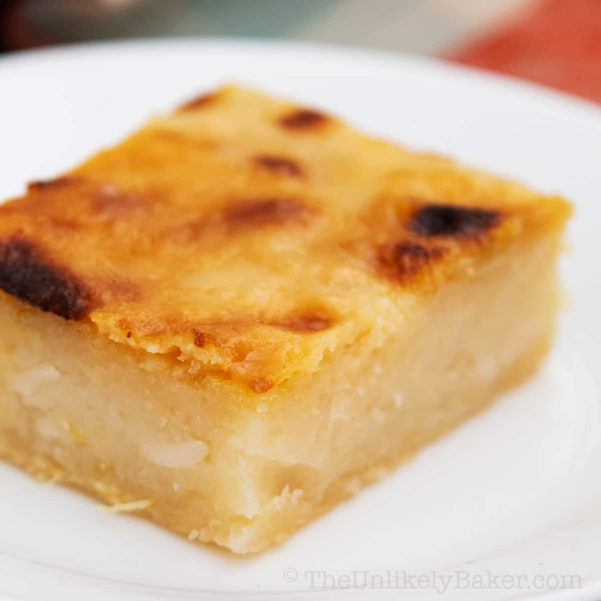

Cassava Cake

This is a recipe for the cassava cake.
It is easy to make and has minimal ingredients.
The original recipe can be found
here.
Ingredients:
Batter
- 2 packs grated cassava about 2 lbs total weight
- 2 cups coconut milk
- 1/2 12 oz. can evaporated milk
- 3 pieces egg
- 1/4 cup butter melted
- 6 tablespoons cheddar cheese grated
- 1/2 cup condensed milk
- 14 tablespoons granulated white sugar
Topping
- 2 tablespoons flour
- 2 tablespoons sugar
- 1/2 cup condensed milk
- 2 tablespoons cheddar cheese grated
- 2 cups coconut milk
Steps:
- Mix the batter ingredients, except for the coconut milk and 1 egg
- Add the coconut milk.
- Grease the banking tray, and then pour in the batter.
- Bake for 1 hour at 350 degrees Farenheit.
- Start the topping by combining the sugar and flour.
- Add the condensed milk and mix.
- Add the cheddar cheese and mix.
- Add the coconut milk and mix.
- Pour the topping over the batter.
- Separate the yolk from the egg white of the last egg.
Glaze the egg white over the topping.
- Add the cake to the oven in boil mode. Broil until the cake turns light brown.